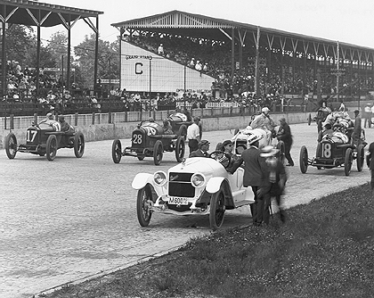

Indianapolis History
Indianapolis was founded in 1820, almost three centuries ago. It was built to be a capital city; you can see the entire layout from the top of a monument. Though it is arguable who the first person was to settle in the city limits, it was a European who first built a log cabin. The entire place was designed before it was built, giving it an organized layout and regulations for the buildings to follow.
During the Civil War, Indianapolis was a major supporter of President Lincoln. It was one of the main stops along the Underground Railroad, and was used as a base for the Union army preparing to enter Confederate lands, even though the nearest Confederate city was sixty miles away.
During the Industrial Era, Indianapolis increased its wealth as a city  by financing projects to build roads, canals, and buildings. The city grew, and many factories were erected, bringing children into labor for the good of the majority. In 1847, the first railroad ran to and from Indianapolis, bringing both commerce and trade to the previously semi-isolated city.
One of the most important events during the Industrial Revolution was a large, city-wide strike that began in October, 1913. After more and more working unions joined, the city governor had to call in an army to keep the people pacified. Though the entire thing started because they wanted the right to vote, which a recent bill had outlawed, the strike resulted in regular work hours, minimum wage, and other workers' benefits, in addition to voting privileges.
In the early twentieth century, Indianapolis became very industrious and productive. With the discovery of Trenton's field, where both oil and natural gas were found, the city gained great wealth. Trenton's field turned out to be one of the largest oil and natural gas deposits in the world.
Today, Indianapolis is a thriving, beautiful city, full of life, culture, and buildings.